|
|
|
Browsing
Contact Us |
Campaigners |
Face to Face |
Tribune |
Interview |
News |
On the Web |
One Million |
Report
Farsi | Français | German | Italian | Spanish | العربية Also in this section
|
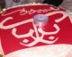 Anniversary Special A Report of the Campaign in Photographs—Year OneThursday 28 August 2008 Change for Equality: On the occasion of the second anniversary of the One Million Signatures Campaign, we bring you a report of the Campaign’s activities in Year 1, captured through photographs. These pictures only capture a portion of the activities of activists in the Campaign, nevertheless, the report provides an overall perspective on the many achievements of this effort in a short period of time. The experience and dedication of Campaigners over the past two years has worked to broaden this effort and transform it into to a national movement. The photographic report of the Campaign’s activities in year two will be posted soon. August 27, 2006 The One Million Signatures Campaign Demanding Changes to Discriminatory Laws, commonly referred to as the Campaign for Equality was inaugurated behind the closed doors of Ra’ad Conference hall. Security forces prevented activists from holding their inaugural seminar, as a result the Campaign was launched on the streets and the first signatures in support of its petition collected.
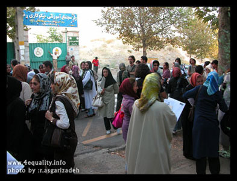 November 2, 2006: Hamadan joins the Campaign
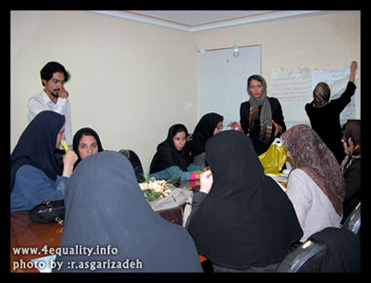 November 3, 2006: Gorgan joins the Campaign
November 12, 2006: Karaj joins the Campaign
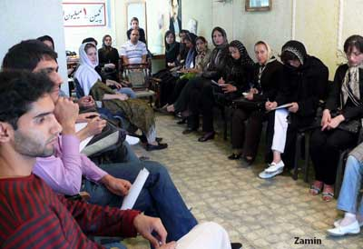 November 18, 2006: Arundhati Roy supports the Campaign
November 30, 2006: Yazd joins the Campaign
December 12, 2006: The first public meeting of Campaign activists
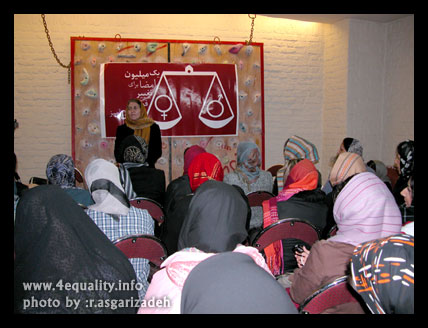 December 12, 2006: The first arrest of a member of the Campaign. Zeinab Payghambarzadeh was arrested while collecting signatures in support of the Campaign’s petition on the Metro.
December 27, 2006: Kermanshah joins the Campaign.
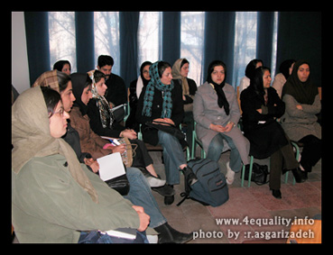 January 9, 2007: Nasim Sarabandi and Fatemeh Dehdashti arrested while collecting signatures.
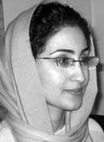 February 21, 2007: Campaign holds training workshop in Mashad.
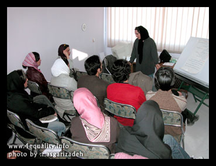 February 23, 2007: The Mothers Committee of the Campaign begins activities. One of the main aims of the Mothers Committee at the time of formation was to provide support to younger activists while collecting signatures, to make resources available to Campaign activists (such as their homes for the convening of meetings, since the Campaign had been systematically denied space for public meetings) and most importantly to intervene in cases of arrest of Campaign activists, by conducting lobbying efforts, writing of statements and protesting such actions.
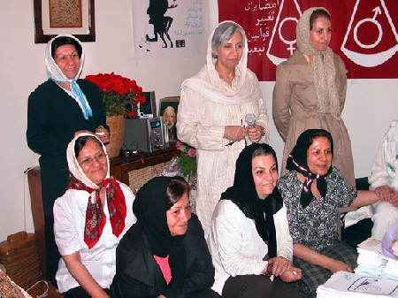 February 28, 2007: The Campaign’s Workshop in Rasht
March 1, 2007: The One Million Signatures Campaign in California kicks off its activities by setting up a table and collecting signatures from Iranians at Anousheh Ansari’s lecture at UCLA.
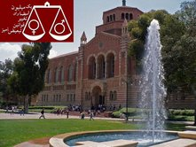 The Campaign volunteers based in California among the most active groups supporters of the Campaign outside of Iran.
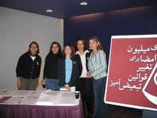 March 8, 2007: The Campaign is highlighted in the March 8th Celebrations in Vienna
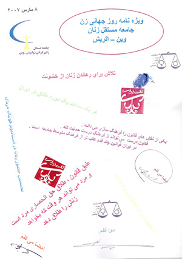 March 13, 2007: The second public meeting of Campaign activists
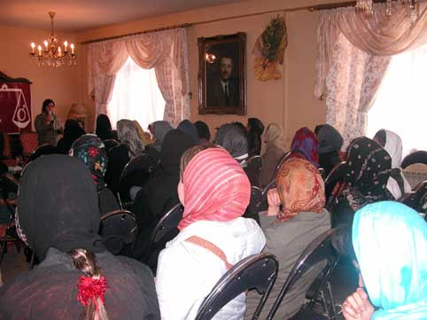 March 25, 2007: Campaign activists celebrate the Iranian New Year, by emphasizing their demands for equal rights. The Iranian New Year coincides with the Spring solstice (usually March 21) and the celebrations surrounding it last for 13 days.
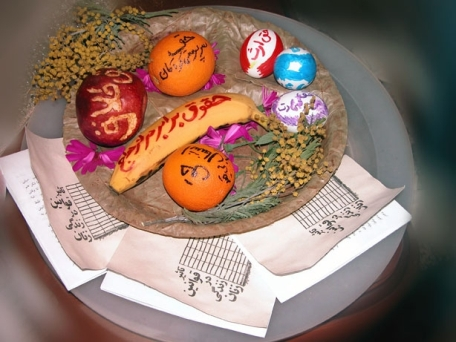 April 2, 2007: Five members of the Campaign are arrested while collecting signatures in Park Laleh. Three of them, Sara Imanian, Homayoun Nami, and Saiedeh Amin were released after spending one day in detention. The other two, pictured below, Mahboubeh Hosseinzadeh and Nahid Keshavarz, were transfered to Evin Prison’s public ward and spent 13 days in prison.
April 10, 2007: "The Women’s Movement: Threats and Resistance" meeting held in Advar (Organization of Iranian Alumni, of the Office to Consolidate Unity).
April 15, 2007: Mahboubeh Hosseinzadeh and Nahid Keshavarz released from prison.
April 24, 2007: The third public meeting of Campaign activists.
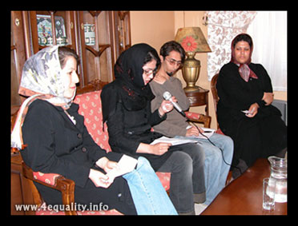 June 10, 2007: Ehteram Shadfar, member of the Mothers Committee of the Campaign arrested.
June 12, 2007: Celebration of June 12, the day of Solidarity of Iranian Women, by Campaign members.
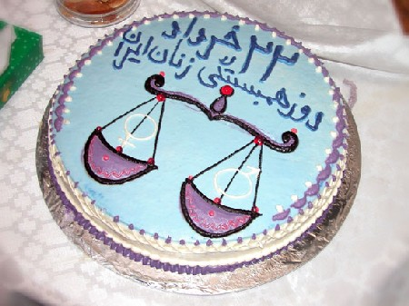 June 17, 2007: Members of the One Million Signatures Campaign Participate in the first conference of the Nobel Women’s Initiative.
July 11, 2007: Amir Yaghoub-Ali member of the Men’s Committee of the Campaign arrested while collecting signatures in support of the Campaign in Andisheh Park. Amir is the first male Campaigner to be arrested in relation to his activities in support of this effort.
August 26, 2007: Painting exhibit "All My Mothers" held in support of the Campaign and in celebration of the Campaign’s first anniversary.
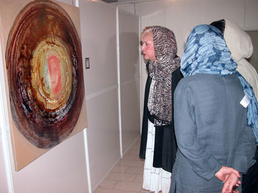 August 27, 2007: Campaign holds press conference on occasion of first anniversary.
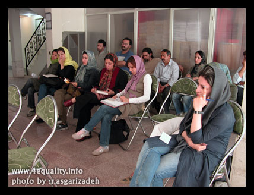 August 27, 2007: Public meeting in celebration of the first anniversary of the One Million Signatures Campaign.
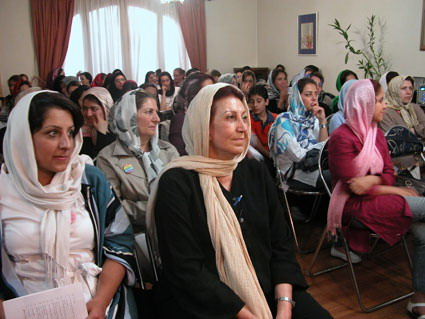 The caption in Farsi reads: "The One Million Signatures Campaign Turned One."
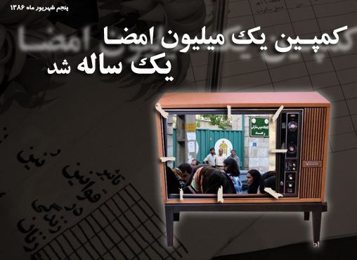 Stay tuned for the second part of this photographic report, covering events in the second year of the Campaign. |